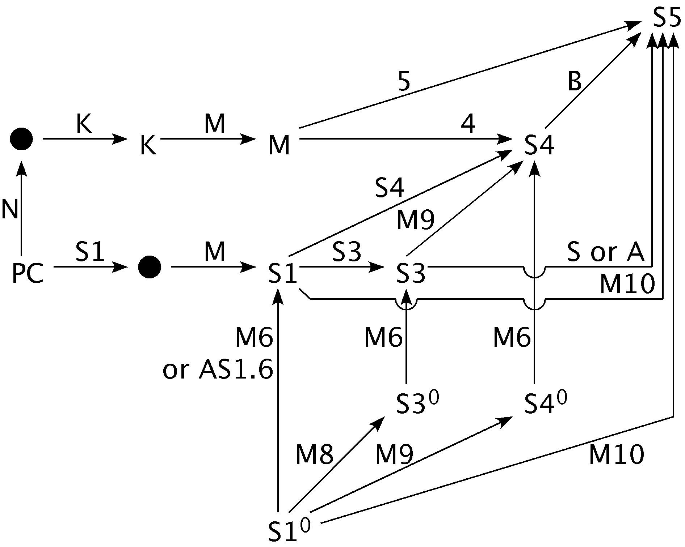

Common Modal Logics

System K
- A simplest modal logic
- Propositional logic - PC, in our case Hilbert's
- Necessitation rule - X |= □ X
- Axiom K - □ (X ⇒ Y) ⇒ (□ X ⇒ □ Y)
System S5
- Often the ending point
- Several ways to S5 from propositional logic
- Several ways to S5 from strict systems
Strict Systems
- With a superscript0 in the picture
- An alternative to PC as the starting point